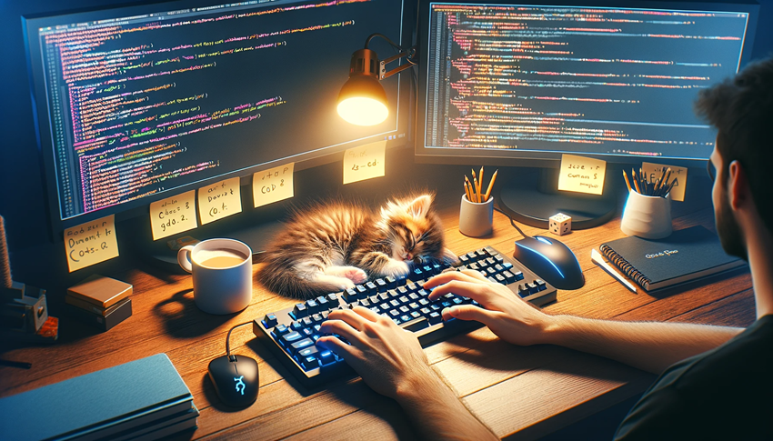
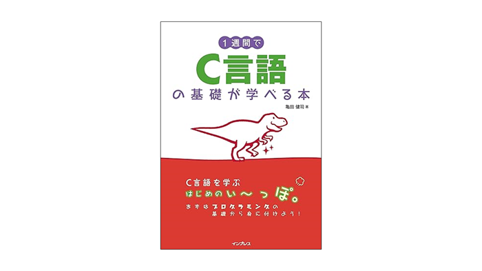

おさえておきたいプログラミングの基本

これからプログラミングを学ぶ初心者に、C言語を1週間で身につけてもらうための内容です。内容は以下のようになっています。
C言語でプログラムをするのに必要な統合開発環境(IDE)の利用方法を紹介します。
| No. | 内容 | 詳細 |
|---|---|---|
| 1 | VisualStudio2022 | Microsoft社のWindows向け開発環境VisualStudio2022での開発方法について説明します。 |
学習に役立つ参考資料を紹介します。
| No. | 内容 | 詳細 |
|---|---|---|
| 1 | 参考になるC言語の本 | さらなる学習の助けになるC言語の書籍を紹介します。 |
| 2 | アスキーコード表 | 基本的な文字コードである、アスキーコード表です。 |
| 3 | エスケープシーケンス | 特殊な文字を表す、エスケープシーケンスの一覧表です。 |
| 4 | 演算子の優先順位 | C言語で出てくる様々な演算子の優先順位を紹介します。 |
一週間でわかるC言語・C++言語がオンライン講座になりました！動画と音声によってさらにわかりやすくなりました!! 1講座で2つの言語を学ぶことができる上に、練習問題の回答もダウンロードできます。
Read →